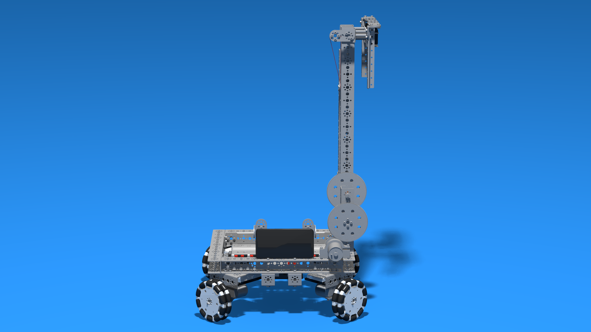
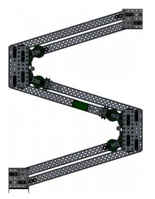

Now that you have the game elements inside of your robot from your intake, you need to be able to get them to the location where they need to be scored. In most FTC games, your drivetrain alone will not be able to do this. Why? In most modern FTC games, there is a vertical component to scoring
That is to say, you're going to need a way to lift the game pieces up. While this can be accomplished via shooting in certain niche circumstances, I don't have the knowledge neccesary to create an intro guide to shooting in FTC. In most games, you will end up using a linear mechanism to combat this vertical challenge.
Linear slides are the most common solution for linear mechanisms. The image above is a render of the linear slide sets on the 731 Skystone robot.
There are many varieties of slides that can be used for linear extension, including extrusion, x-rail, and drawer slides. I recommend using aluminum ball bearing drawer slides
such as those created by Misumi or Long Robotics. These slides can handle the loads of FTC robotics while being smooth and space efficient.
To power linear slide sets, you must first create inserts that link the slides together. You can attach v-groove bearings to these inserts near the top and the bottom of the slides. Then, by stringing the slides
and manipulating the string with a pulley attached to a motor, you can move the slides up and down.
It is important to remember that pulley diameter and motor gear reduction are the main factors affecting slide speed.

Arms are a common solution to linear mechanisms often found in lower tier robots. The image above is of a standard, kit-based armbot.
In order to make arms viable, many teams will combine them with linear slides in order to allow the arm to extend and retract. In these scenarios, a string to retract the slides is essential, as the arm will be at a variety of angles and you cannot rely on gravity alone to retract the slides.
In situations where arms are carrying a large load, such as the cap ball in Velocity Vortex, it is important to use a high gear reduction in order to have enough torque for rotation without burning out your motors.

Linkages are an uncommon solution for linear mechanisms, most recently popularized by FTC 11115 Gluten Free in Skystone. The iamge above is a Double Reverse Four bar linkage on a Vex robot.
Linkages such as a DR4B linkage work by utilizing 1:1 gearing or other methods of powering in order to make sure that the top stage stays level with the horizontal at all times.
Linkages require precise PID loops to control them with pinpoint accuracy, but can be very effective. In general, I would recommend using linear slides over linkages for linear mechanisms. In some games, such as Skystone, the two can be utilized in tandem. The 731 Skystone robot utilized linear slides for the linear mechanism and a virtual four bar linakge for scoring.